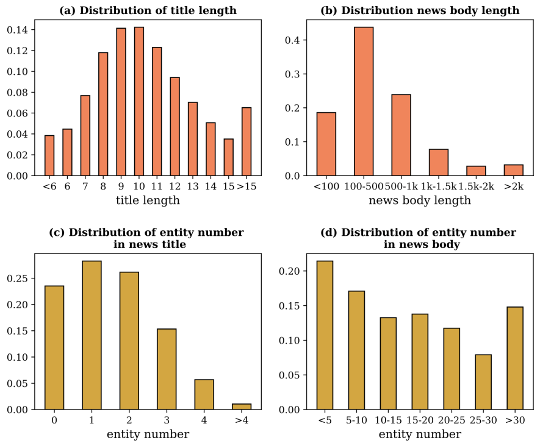

PENS is a benchmark to testify the performance of personalized
news headline generation approaches.
Overall Description
The PENS dataset contains 113,762 pieces of News whose topics are distributed into 15 categories. Each news includes a news ID, a title, a body and a category manually tagged by editors. The average length of news title and news body is 10.5 and 549.0, individually. Entities from each news title are extracted and then linked to those in WikiData.
We sample 500, 000 user-news impressions from June 13, 2019, to July 3, 2019, as the training set. An impression log records the news articles displayed to a user as well as the click behaviors on these news articles when he/she visits the news website at a specific time. The format of each labeled sample in our training set is [uID, tmp, clkNews, uclkNews, clkedHis], where uID indicates the anonymous ID of a user, tmp denotes the timestamp of this impression record. clkNews and uclkNews are the clicked news and un-clicked news in this impression, respectively. clkedHis represents the news articles previously clicked by this user. All the samples in clkNews, uclkNews and clkedHis are sorted by the user’s click time.
Dataset Format
Our provided training dataset has contains the following files:
| File Name | Description |
|---|---|
| news.tsv | The information of news articles |
| behaviors.tsv | The click histories and impression logs of users |
| entity2vecd90_e500_transE.vec | The embeddings of entities in news extracted from News Graph |
| entity2id.txt | The id mapping between the Satorio ID and entity ID |
news.tsv contains the detailed information of news articles involved in the behaviors.tsv file. It has 6 columns divided by the tab symbol:
| Column | Example Context | Description |
|---|---|---|
| News ID | N25879 | Unique ID of news |
| Category | sports | Belong to one of 15 categories |
| Entities | [{"Label": "Columbus Crew SC", "SatoriId":"14364", "Confidence": 0.998, "OccurrenceOffsets": [45], "SurfaceForms": ["Columbus Crew"], "Type":0}, ...] | Label: the entity name in News graph SatoriId: the entity ID in News graph Confidence: confidence of entity linking OccurrenceOffsets: The character-level entity offset in the news headline SurfaceForms: the raw entity names in the original text |
| Headline | Predicting Atlanta United's lineup against Columbus Crew in the U.S. Open Cup | |
| News body | Only FIVE internationals allowed, count em, FIVE! So first off we should say, per our usual Atlanta United lineup predictions... | The id mapping between the Satori ID and entity ID |
behaviors.tsv contains the impression logs and users' news click histories. It has 6 columns divided by the tab symbol:
| Column | Example Context | Description |
|---|---|---|
| Impression ID | 1202 | Unique ID of impressions |
| UserID | U28753 | A unique identity of a user is determined by both ``UserID’’ and ``TypeID’’ |
| History | N28763 N28743 | The user’s historical clicked news |
| Pos | N22435 N25463 | The clicked news in this impression |
| Neg | N54323 N49857 N93043 | The unclicked news in this impression |
entity2vecd90_e500_transE.vec contains the 90-dimensional embeddings of the entities learned from the subgraph (from news graph) by TransE method. The i-th line represents the vector of the i-th entity that is split by the tab symbol.
entity2id.txt contains the mapping between the Satori ID and entity ID.
Overall Description
The construction process of test set: To provide an offline testbed, we invited 103 English native speakers (all are college students) to manually create a test set by two stages.
At the first stage, each person browses 1,000 news headlines and marks at least 50 pieces he/she is interested in. These exhibited news were randomly selected from our news corpus and were arranged by their first exposure time.
At the second stage, everyone is asked to write down their preferred headlines for another 200 unseen news articles from our dataset without exhibiting them the original news titles, while highlighting some important segments in the original news articles as well. These unseen news articles are evenly sampled, and we redundantly assign them to make sure each news is exhibited to four people on average. The quality of these manually-written headlines were checked by professional editors from the perspective of the factual aspect of media frame. Low-quality headlines, e.g. containing wrong factual information, inconsistent with the news body, too-short or overlong, etc., are excluded. The rest are regarded as the personalized reading focuses of these annotators on the articles, and are taken as gold-standard headlines in our dataset.
Dataset Format
Our provided test dataset has the following contexts:
| Column | Example Context |
|---|---|
| UserID | The unique ID of 103 users |
| History | The user’s historical clicked news collected at the first stage |
| SeenNews | The exhibited news for each user at the second stage |
| Headlines | The manually-written news headlines for the exhibited news articles and can be split by '#TAB#' |
| Segments | The highlighted segments corresponding to the exhibited news articles and can be split by '#TAB#' |
This web page was started with Mobirise